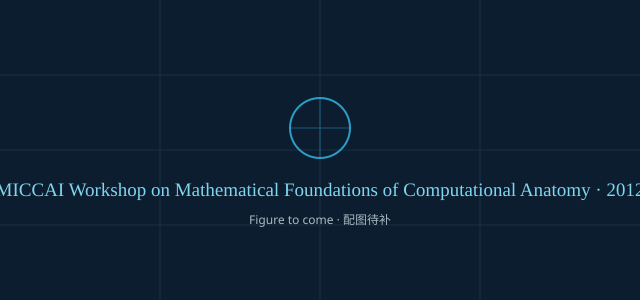

By Method · 03
Medical Image Synthesis
Synthesizing images with ground-truth annotations: diffusion probabilistic models that improve downstream segmentation, and long-standing work on realistic anatomy synthesis for validation.
Overview
Synthesizing images with ground-truth annotations: diffusion probabilistic models that improve downstream segmentation, and long-standing work on realistic anatomy synthesis for validation.
- Diffusion models synthesize images with annotations (IJIST 2025)
- Synthesis-driven gains in segmentation performance
- Realistic subcortical anatomy with known deformations for validation
04 · Selected work
Selected work
Each card: figure on top, key points below.
01
Synthesizing Images with Annotations for Medical Image Segmentation Using Diffusion Probabilistic Model
International Journal of Imaging Systems and Technology · 2025
- Diffusion probabilistic models synthesize images together with annotations.
- Synthetic data improves segmentation performance.
02
Synthesizing with Diffusion model for improving medical image segmentation performance
IEEE BIBM · 2023
- Diffusion-based synthesis targeted at segmentation gains.
- Empirical study across segmentation tasks.
03

Evaluation of Nucleus Segmentation in Digital Pathology Images through Large Scale Image Synthesis
SPIE Medical Imaging · 2017
- Large-scale synthetic images with ground truth for evaluation.
- Systematic benchmarking of nucleus segmentation.
04

Synthesis of Realistic Subcortical Anatomy with Known Surface Deformations
MICCAI Workshop on Mathematical Foundations of Computational Anatomy · 2012
- Realistic subcortical anatomy with known ground-truth deformations.
- Gold-standard testbed for shape analysis and registration.